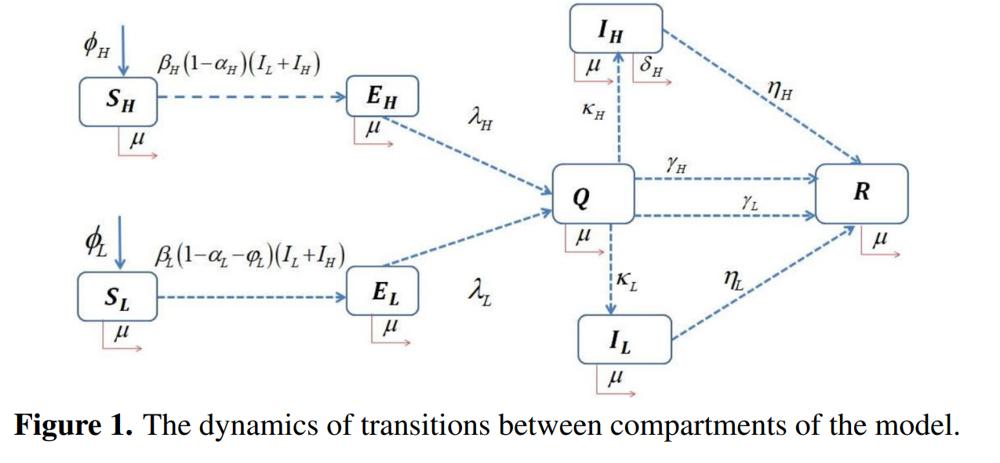
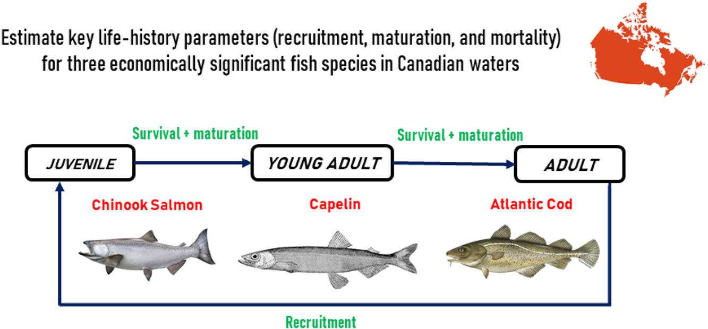
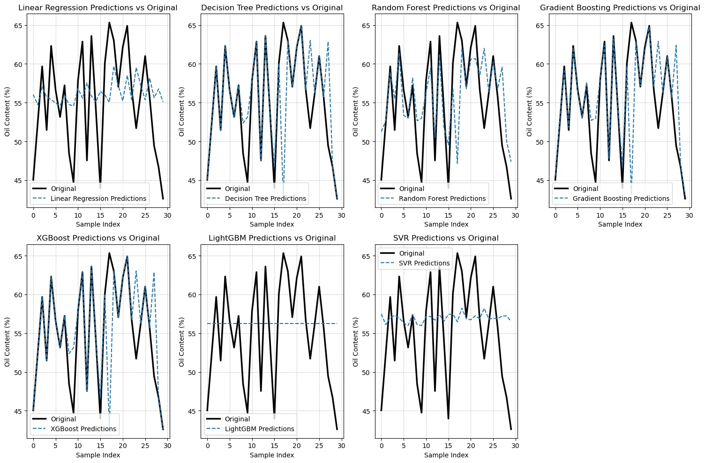

Mathematical & Data-Driven Modelling
This research develops mathematical and data-driven models to study complex biological, ecological, and public health systems — working at the intersection of applied mathematics, epidemiology, ecology, data science, and machine learning, with a focus on building models that are rigorous, interpretable, and useful for decision-making.
A central theme is the integration of mechanistic modelling with modern computational methods: ordinary differential equations, statistical learning, forecasting, uncertainty analysis, explainable AI, and simulation-based approaches for understanding system behaviour and evaluating interventions.

Mathematical Epidemiology & Disease Modelling
This work develops and analyses mathematical models for infectious disease transmission, public health risk, and outbreak response. It includes compartmental epidemic models, risk-stratified population models, vaccination dynamics, limited-data forecasting, and model-based evaluation of disease control strategies.
Applications span rotavirus, COVID-19, hand-foot-and-mouth disease, mpox, and other emerging infectious disease settings — combining analytical methods, numerical simulation, and data-driven approaches to support public health interpretation and preparedness.

Ecological & Climate-Health Systems
This research studies how environmental change, climate variability, and human activity shape ecological systems and population dynamics. A major focus is on aquatic ecosystems, fisheries, and the interaction between climate stressors and biological processes.
The doctoral research develops stage-structured mechanistic models to estimate maturation, mortality, and recruitment parameters for economically important fish species — supporting questions around climate adaptation, fisheries management, and the long-term resilience of ecological and human systems.

AI, Data Science & Forecasting
Machine learning, statistical modelling, and time-series methods are used to detect patterns, generate forecasts, and extract insight from complex datasets. The work is especially interested in models that are not only predictive, but also interpretable and useful for scientific understanding.
Applications include public health surveillance, environmental risk, agricultural systems, fisheries, and social-media-derived signals related to ecological and health-related change.

Explainable AI & Hybrid Modelling
This research develops explainable and hybrid modelling frameworks — combining mechanistic structure with machine learning to make complex models more transparent, auditable, and scientifically meaningful.
A key contribution uses Formal Concept Analysis to provide lattice-based explanations for ensemble learning methods such as XGBoost and Gradient Boosting. This framework organises feature relationships and model decision structures in a way that supports interpretation well beyond standard local explanation methods such as LIME and SHAP.

Decision Modelling & Policy-Relevant Analysis
Across all research themes, a shared interest is in how models can support better decisions under uncertainty. This includes evaluating intervention strategies, comparing policy scenarios, quantifying uncertainty, and translating model outputs into practical recommendations.
Applications range from public health intervention timing and resource allocation to ecological management thresholds and environmental planning — connecting rigorous mathematical analysis with real-world decision needs.

Selected Presentations
- Invited (Virtual) — Universitas Terbuka, Indonesia: "A Mechanistic Stage-Structured Model..." (May 19, 2026)
- Invited — Disease-Informed Modeling Lab, York University (November 4, 2025)
- Invited — Grad Math & Stats Seminar, York University (October 17, 2025)
- Invited — LIAM Fall 2025 Seminar Series, York University (September 17, 2025)
- Invited — Dahdaleh Institute Global Health Seminar Series, York University (January 10, 2024)
- Presenter — 8th Sci-Tech Symposium, Prince of Songkla University, Thailand (May 11, 2018)
- Presenter — International Seminar on Research Methods in Practice Workshop, Prince of Songkla University, Thailand (May 21, 2017)